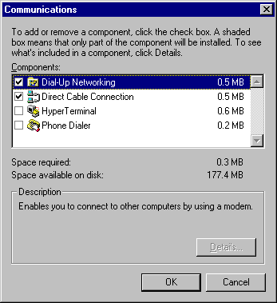

Contents
Working with computers (using Windows 95, internet, ...)
Below I describe how to do various things with Windows 95 and the internet.
DISCLAIMER: I am not responsible for any damage that is caused by the use of this content for any reason. So if you do something and it causes you to lose that billion dollars worth of research it is not my fault. I don't see any problems by using this information but I am still not responsible.
Using Windows 95
Running Programs
In order to run a program click on  and then click on from the Start Menu.
and then click on from the Start Menu.
A list will come up with the programs you can run. Navigate to the program you wish to run and click on it. If the program you wish to run is a icon on your desktop you can double-click on it to run it. While you are using programs if you wish to switch to one press and hold down the ALT key and then press the TAB key. A small window will showup showing what programs you can switch to. Press the TAB key to cycle through the programs and when you have the one you want release the ALT key.
Working with drives
In order to look at the contents of a floppy disk or hard disk drive double-click on . A dialog will come up with a list of all your computer drives.
Double-click on the drive you wish to open and a window will come up with the contents of that drive.
Copying floppy disks
You can copy the contents of one floppy to another by using the Copy Disk command in My Computer.
You cannot copy the contents of different sizes of floppy disks with this procedure. Example: A five and a quarter floppy disk cannot be copied to a three and a half inch floppy disk. You can however copy all the contents of the floppy to a temporary directory on your hard disk and then copy the temporary directory contents to the different floppy.
Copying files
To copy a file open up its location and select the file by clicking on it once. Press CTRL+C and then open up the new place where you wish to copy the file. Press CTRL+V to copy the file to the new location.
Moving files
To move a file open up its location and select the file by clicking on it once. Press CTRL+X and then open up the new place where you wish to move the file. Press CTRL+V to move the file to the new location.
Deleting files
To delete a file open up its location and select the file by clicking on it once. Press the DEL key and confirm the deletion by click on the Yes button.
Renaming files
To rename a file open up its location and right click on the file, then select Rename and type in the new filename. If you are entering a new name and wish to cancel the change press the ESC key. To indicate that you are finished renaming the file press the ENTER key.
Restoring deleted files
When you delete a file it is usually stored in the Recycle Bin. To restore a file double-click on and scroll through the list of deleted files until you see the one you wish to restore.
Click on the name of the file and then click on the File menu. Select Restore from the menu and the file will be placed back to its original location. Files deleted off floppy disks are not put in the recycle bin and are gone forever.
Clearing out the recycle bin
To remove all deleted files in the recycle bin permanently right click on and select Empty Recycle Bin. When you are asked to confirm click on the Yes button and it will be emptied.
Selecting multiple files
If you wish to select more than one file at a time for copying, moving, or deleting open up the files location and click on the first file you want to select. If the files are all together then you can hold down the Shift key and click the last one in the list to select all within that range. If you want to select files that are not next to each other click on the first one and then hold down the CTRL key and click on the other ones you wish to select. Once you have selected the files you can use the same procedure to copy, move, or delete them. To select every file press CTRL and A at the same time.
Unselecting files
To unselect a file or group of files you can either click on another file to unselect them all or you can hold down the CTRL key and click on the ones you wish to unselect while still leaving others selected.
Creating folders (a.k.a. directories)
You can create a folder on the desktop or on a disk drive. To create one right click on the desktop or inside a drive window and select New, then select Folder and a new folder will be made that you can name.
Copying, Deleting, Renaming, and Un/Selecting folders
You copy, delete, rename, select, and unselect folders the same way as files.
Finding files
To find files click on  and select
and select  . Now select Files or Folders and type in the name of the file you are searching for.
. Now select Files or Folders and type in the name of the file you are searching for.
Adding shortcuts
To add a shortcut to the desktop right click on the desktop and select New. Next select Shortcut and a dialog will come up where you can give the programs location for the shortcut and what the name and icon is for the shortcut. To give a shortcut a shortcut key right click on the shortcut and select properties, then select the Shortcut tab and you can setup options for the shortcut. To add shortcuts to the Start Menu right click on and select Open. Now add any shortcuts you wish to add just like you would for the desktop. If you add shortcuts under the Programs folder they will be put under  in the Start Menu.
in the Start Menu.

You can create new folders under the start menu by selection Folder instead of Shortcut.
Moving, Deleting, and Renaming shortcuts
You move, delete, and rename shortcuts just like you do files. To modify shortcuts under the Start Menu right click on and select Open.
Resizing and Moving the taskbar
To resize the taskbar move your mouse to the outer edge of the taskbar and a direction arrow will form.

Left-click and hold down the mouse and drag the mouse to resize the taskbar. To move the taskbar to the top, right, bottom, or left click on the taskbar (but not on any program buttons on the taskbar) and hold down the mouse and drag the taskbar to the new location.
Setting up screen savers
To setup a screen saver right click anywhere on the display (but not on program icons) and select properties. The Display dialog will come up.
Click on the Screen Saver tab.
Select a screen saver from the drop down list and one will be set for use.
Setting up backgrounds
To setup a background right click anywhere on the display (but not on program icons) and select properties. The Display dialog will come up.
Click on the Background tab.
Select a pattern or bitmap from either of the lists and click on the OK button.
Making programs start when you turn your machine on
To make programs come on when you first enter Windows 95 add shortcuts under the Startup folder under Programs on the Start Menu.
Getting additional help
You can get extra help by selecting Help from the Start Menu. It can provide you with extra information about how to use Windows 95. If you have the cd version of Windows 95 then you can also run a guided tour on how to use Windows 95. Just insert the cd into your computer and select Guided Tour from the program that comes up.
Advanced usuage of Windows 95
NOTE: This information is advanced procedures that can be done with Windows 95 and I don't recommend beginners trying any of this due to the fact that you could mess something up. Make sure you have read the disclaimer.
Scandisk
Scandisk is a program that checks disks for errors. I recommend running a standard check on your hard disk before you turn it off for the day. To run scandisk click on the Start button, select Programs, select Accessories, select System Tools, and then select Scandisk. If it is not their then you need to run Windows 95 Setup and install it. If you ever have a hard disk that comes up with bad clusters (or sectors) then you should see about getting it replaced. If you have trouble reading from a floppy scandisk can scan the disk and try to recover the information.
Disk Defragmenter
Disk Defragmenter is a program that will defragment files on your hard drive. Over time files will be broken into pieces over the hard drive and slow down the hard drive. You can use Disk Defragmenter to defragment these files and put them together. This will help your hard drive performance and help it last longer. Before running the program you should run a standard scan on your hard disk using Scandisk to make sure you don't have any errors on your disk. To run Disk Defragmenter click on the Start Button, select Programs, select Accessories, select System Tools, and then select Disk Defragmenter. If it is not their then you need to run Windows 95 setup and install it.
FDISK
FDISK is a program that writes partitions on hard disks. Use FDISK CAREFULLY. You could erase everything on a hard drive in less than a second with this program. To run FDISK type in FDISK in the Run menu under the Start Button. A screen like this will come up:
FDISK Options
Current fixed disk drive: 1
Choose one of the following:
1. Create DOS partition or Logical DOS Drive
2. Set active partition
3. Delete partition or Logical DOS Drive
4. Display partition information
5. Change current fixed disk drive
Enter choice: [1]
Press Esc to exit FDISK
The first option (number 1) allows you to create partitions. This screen will come up when you go to that option:
Create DOS Partition or Logical DOS Drive
Current fixed disk drive: 1
Choose one of the following:
1. Create Primary DOS Partition
2. Create Extended DOS Partition
3. Create Logical DOS Drive(s) in the Extended DOS Partition
Enter choice: [1]
Press Esc to return to FDISK Options
Here are your options:
- 1. Create Primary DOS Partition -- This type of partition can exist only once on a hard disk. It is used as the primary partition and usually is used to start the boot sequence.
- 2. Create Extended DOS Parition -- This type of partition is made to hold additional Logical DOS Drives on that hard disk.
- 3. Create Logical DOS Drive(s) in the Extended DOS Partition -- This option creates additional logical drives in the extended partion. Logical drives being D:, E:, ...
Here is an example on how to make a hard disk have one big primary partition that can be used for booting.
Select the "1. Create Primary DOS Partition" option from the Create Primary Partitions menu. A message will come up like this one:
Create Primary DOS Partition
Current fixed disk drive: 2
Do you wish to use the maximum available size for a Primary DOS Partition
(Y/N)...................................................? [Y]
Press Esc to return to FDISK Options
Since you want to use the whole disk just press enter. The program will alert you that the partition has been made and now you can press Escape.
If you wish to make multiple hard disks off of one disk do the following:
Select the "1. Create Primary DOS Partition" option from the Create Primary Partitions menu. A message will come up like this one:
Create Primary DOS Partition
Current fixed disk drive: 2
Do you wish to use the maximum available size for a Primary DOS Partition
(Y/N)...................................................? [Y]
Press Esc to return to FDISK Options
Since we don't want to use the whole disk press N and hit the enter key. A new screen will come up that looks something likes this:
Create Primary DOS Partition
Current fixed disk drive: 2
Total disk space is 122 Mbytes (1 Mbyte = 1048576 bytes)
Maximum space available for partition is 122 Mbytes (100%)
Enter partition size in Mbytes or percent of disk space (%) to
create a Primary DOS Partition.................................: [ 122]
No partitions defined
Press Esc to return to FDISK Options
I will break this hard drive in half, I will create one primary partition that will be used to boot from and another with a extended partition with a logical drive. In order to do this I enter in 50% for the partition size and get a screen something like this:
Create Primary DOS Partition
Current fixed disk drive: 2
Partition Status Type Volume Label Mbytes System Usage
D: 1 PRI DOS 61 UNKNOWN 50%
Primary DOS Partition created, drive letters changed or added
Press Esc to continue
I press escape to continue and I am returned to the main screen. Now I want to create a Extended Partition to put my logical drive in. Select 1 from the menu and then select 2 from the menu. A screen like this comes up:
Create Extended DOS Partition
Current fixed disk drive: 2
Partition Status Type Volume Label Mbytes System Usage
D: 1 PRI DOS 61 UNKNOWN 50%
Total disk space is 122 Mbytes (1 Mbyte = 1048576 bytes)
Maximum space available for partition is 61 Mbytes ( 50%)
Enter partition size in Mbytes or percent of disk space (%) to
create an Extended DOS Partition..............................: [ 61]
Press Esc to return to FDISK Options
Since I want to use the remaining space I will just use the value that is entered for me and press the enter key. A screen like this comes up:
Create Extended DOS Partition
Current fixed disk drive: 2
Partition Status Type Volume Label Mbytes System Usage
D: 1 PRI DOS 61 UNKNOWN 50%
2 EXT DOS 61 UNKNOWN 50%
Extended DOS Partition created
Press Esc to continue
I then press the escape key and I am automatically brought to the create logical drives menu.
Create Logical DOS Drive(s) in the Extended DOS Partition
No logical drives defined
Total Extended DOS Partition size is 61 Mbytes (1 MByte = 1048576 bytes)
Maximum space available for logical drive is 61 Mbytes (100%)
Enter logical drive size in Mbytes or percent of disk space (%)...[ 61]
Press Esc to return to FDISK Options
Since I want only one logical drive I use the default value given to me to use all the avaiable space and press the enter key. A screen comes up that looks like this:
Create Logical DOS Drive(s) in the Extended DOS Partition
Drv Volume Label Mbytes System Usage
E: 61 UNKNOWN 100%
All available space in the Extended DOS Partition
is assigned to logical drives.
Press Esc to continue
I am alerted that I have filled up the space and am returned to the main menu after I press the escape key.
The second option on the main menu, "2. Set active partition", allows you to set a partition active so your computer can boot from it.
The third option on the main menu, "3. Delete partition or Logical DOS Drive", allows you to remove partitions from your hard drive. NOTE: Be careful when you use this as you could wipe out an entire hard drive with this command. This screen comes up when you select this option:
Delete DOS Partition or Logical DOS Drive
Current fixed disk drive: 2
Choose one of the following:
1. Delete Primary DOS Partition
2. Delete Extended DOS Partition
3. Delete Logical DOS Drive(s) in the Extended DOS Partition
4. Delete Non-DOS Partition
Enter choice: [ ]
Press Esc to return to FDISK Options
The first option allows you to delete a primary partition. When you select this option you are brought to a menu and can select a partition to delete.
The second option allows you to delete a extended partition. You cannot delete a extended partition until all logical drives under that partition are deleted.
The third option allows you to delete a logical drive. When you delete a logical drive all the other drive letters are adjusted to the change.
The fourth option allows you to delete a Non-DOS partition. You normally won't use this unless you wish to erase another operation system partition (like Linux).
The fourth option on the main menu, "4. Display partition information", will display information about all the partitions for a hard disk drive. You will see something like this:
Display Partition Information
Current fixed disk drive: 2
Partition Status Type Volume Label Mbytes System Usage
D: 1 PRI DOS 61 UNKNOWN 50%
2 EXT DOS 61 UNKNOWN 50%
Total disk space is 122 Mbytes (1 Mbyte = 1048576 bytes)
The Extended DOS Partition contains Logical DOS Drives.
Do you want to display the logical drive information (Y/N)......?[Y]
Press Esc to return to FDISK Options
The fifth option on the main menu, "5. Change current fixed disk drive", changes the current hard disk you are working with. This option will only show up if you have more than one hard disk installed. The order that the hard drives are listed is Primary Master, Primary Slave, Secondary Master, and Secondary Slave.
If you make any changes you will not see the effect until you restart the computer. I repeat, take EXTREME care when using this program or you could lose everything on your computer. Remember: I do not take any responsiblity if you mess up your computer.
Multiple booting. Multi-boot systems can boot different operating systems when the pc is first turned on. To restore the hard drive Master Boot Record so that Windows 95 boots everytime give the command FDISK /MBR and it will rewrite the bootup sequence onto the hard drive. This will erase any multi-boot software you may have installed. Example: The Linux operation system has Lilo which allows you to choose betwene Windows 95 or Linux when your computer turns on. Rewriting the Master Boot Record may lock you out of Linux if you don't have a boot floppy for it.
FORMAT
The FORMAT program formats disks in your computer. You can use the windows interface (under My Computer) or the DOS command. I will describe the use of the DOS command. Here are the basic parameters:
FORMAT X: -- X specifies the drive letter to format.
If one isn't suppplied then the current drive is used.
FORMAT /? -- Gives help
FORMAT /Q -- Performs a quick format
FORMAT /S -- Copies system files to the drive
FORMAT /C -- Tests currently marked "Bad Sectors" as it formats
FORMAT /U -- Preforms a "Unconditional Format" that is usually useful for
skipping past MIRROR creation that was used in DOS 6.X.
After you do a FDISK on a hard drive you will have to format it before it can be used. I would just use this command FORMAT X:.
Stop StartUp group loading
You can stop items in the StartUp folder from being loaded when Windows starts by holding down the CTRL key as Windows is starting.
Stop a cd from automatically loading
You can stop a cd from running its autostart program when you place it in the drive by holding down the SHIFT key as you place it in the drive.
Configuring your computer to connect to a ISP service
In order for you computer to connect to the internet through a dial-up ISP you must install the correct network software to make and handle the connections. Open up Windows Control Panel (under the Start Menu, select Settings, then Control Panel). Double-click on
Next double-click on Communications and the following dialog will come up:

If the Dial-Up Networking option is not checked then check it and click on the OK button. This will install Dial-Up Networking support for you computer. You may have to restart your computer after it is installed and when it does restart you will notice you have a new icon on your desktop. The next step is to add TCP/IP support to your computer so it can talk to other computers on the internet. To do so open up Control Panel and double click on Network. Their should be a list that should have at least these things in it:
"Client for Microsoft Networks" or "Client for NetWare Networks"
IPX/SPX-compatible Protocal
Dial-Up Adapter
If the list already has "TCP/IP" in the list then you can skip this step, if not then click the Add button. A dialog will come up and you will select Protocal and click the Add button.
Then a dialog will come up with a list of protocals you can install.

Select Microsoft from the left list and then click on TCP/IP on the right list. Click on the OK button and that protocal will be installed. You will most likely have to restart windows before the change takes effect.
The next step is to create a ISP profile so the computer knows where to call for the connection. Open up My Computer and double-click on Dial-Up Networking.
If a dialog doesn't automatically come up instructing you to setup a connection then double click on Make New Connection. The following dialog will come up:
Type in the name of your ISP for the computer you are dialing and select the modem you wish to use from the list. Click the "Next" button and type in the area code and telephone number of your ISP, then click the "next" button. Now click the Finish button to complete the setup. If you have to dial a long-distance phone number to your ISP (like I do) you will have to make sure your connection knows this. To setup this open up Dial-Up Networking under My Computer and select the icon with the name of your connection. Next click on "Dial Properties" and click on the "Dial as a long distance call" option at the very bottom. Click on the OK button and the number will dial long distance.
Now you need to tell the computer what the Name Server address is. Open up Dial-Up Networking under My Computer and right click on the icon with the name of your connection. Next select properties and the following dialog should come up:
Next click on the Server Type button and the following dialog appears:
Now click on the TCP/IP Settings... button and you will see this dialog:

Type in the number for your Primary & Secondary DNS and if you are given a Static IP Address enter that in for a IP Address. If your ISP automatically gives assigns your DNS then just leave the Server assigned name server option set. Once you have done that you should be able to double click on your connection icon and a dialog will come up asking for your ISP user name and password. Just enter that information and click on connect.
Figuring out what your IP address is
If you are given a dynamic ip address and want to find out what it is type in the command WINIPCFG in the Run dialog under the Start Menu. From the dialog that comes up select PPP Adapter and it will display your IP address.
Windows 95 Security
You can prevent others from using your computer by activating a screen saver with a password. When you set the screen saver in the Display properties click on the Password protected checkbox and then click on the Password button to give the screen saver a password. NOTE: This is not fullproof, someone could restart your computer or they could exploit a security hole in Windows 95 by inserting a cd that will automatically run a cracker program to terminate the screen saver without a password. You can stop them from being able to use the cd but you have to turn off autoplay for cds. To do so go into Control Panel, under System, CDROM, and open up the properties for your cdrom(s). Then turn off Auto Insert Notification.
Finding things on the internet
You can use search engines to find all kinds of things on the internet. To use one you give the search engine keywords (like MUSIC ARCHIVES, CHEAT CODES, ...) and it will give web pages that have what you searched for. Yahoo is a really good search engine as is Infoseek. If you are looking for new drivers or bug fixes to Windows 95 try going to Winfiles. They have all kinds of Windows 95/98 and Windows NT things for download. For shareware programs and other software downloads try Download.com and FTP.CDROM.COM. If you are looking for e-mail or snail mail address try Four11.com.
Rodney Beede © 1998
Nothing on any of these web pages may be copied without my written permission.